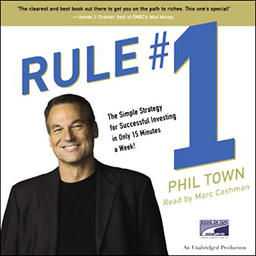
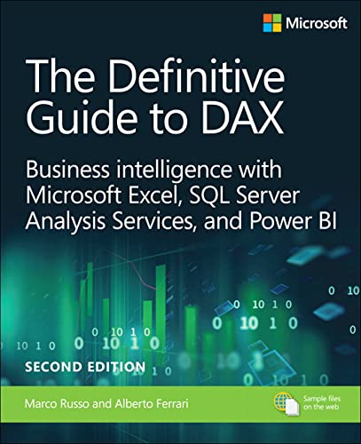

Recomendations
READ, GROW, INSPIRE.
The Richest Man in Babylon
"The Richest Man in Babylon" has had a profound impact on me as a reader. This timeless classic presents captivating stories set in ancient Babylon, offering invaluable financial wisdom. I have been inspired by its lessons on saving, investing, and building wealth, and I continue to apply its practical advice in my journey towards achieving financial success.

Around the world in 80 trades
As a reader, "Around the World in 80 Trades" has taken me on a thrilling adventure across the globe. This captivating book chronicles the author's journey to trade unique goods in various countries, providing a fascinating glimpse into different cultures and the intricacies of global trade.

Rule Number 1
As someone who has delved into "Rule #1: The Simple Strategy for Successful Investing - in Only 15 Minutes a Week!", I have gained invaluable insights into the world of investing. This book offers a straightforward and practical approach, empowering me to make informed investment decisions with just a small time commitment each week.

The Definitive Guide to DAX
"The Definitive Guide to DAX: Business Intelligence for Microsoft Power BI, SQL Server Analysis Services, and Excel Second Edition" has been an indispensable resource in my journey to improve data analysis skills. This comprehensive book equips me with a deep understanding of DAX, enabling me to leverage the full potential of Microsoft Power BI, SQL Server Analysis Services, and Excel for enhanced business intelligence.